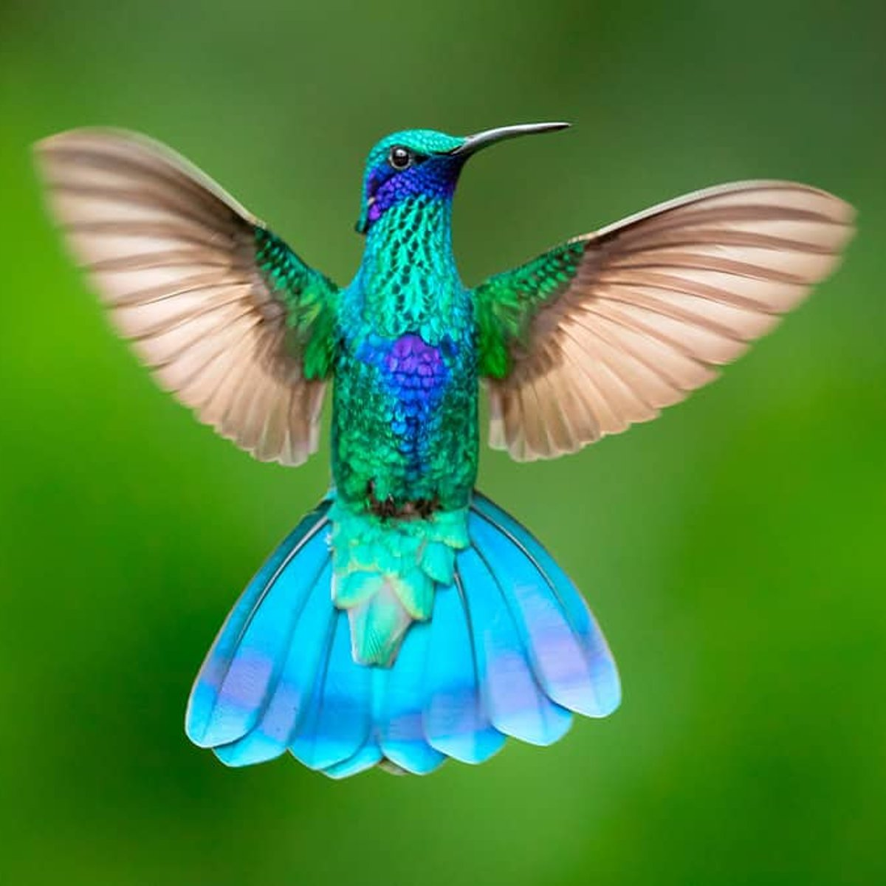

Beija-flor
Amazilia lactea

Características
- Família: Trochilidae
- Habitat: Mata Atlântica
- Tamanho: 9-11 cm
- Alimentação: Néctar e insetos
Curiosidades
O beija-flor é uma das menores aves do mundo e possui características únicas, como a capacidade de voar para trás e permanecer imóvel no ar. Suas asas batem cerca de 80 vezes por segundo, permitindo manobras precisas entre as flores.

Escaneie este QR Code no jardim para acessar esta página